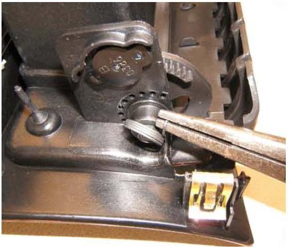
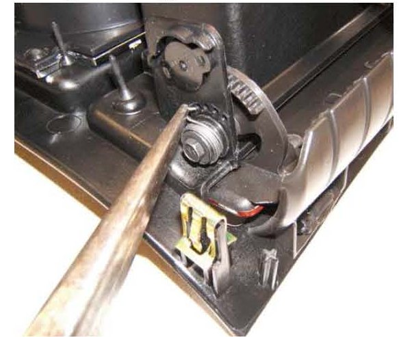
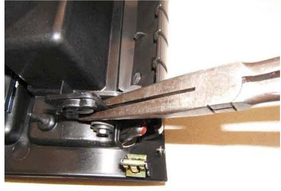
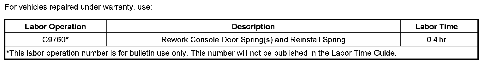

Interior - Console Ashtray/Cupholder Door Slow to Open
TECHNICALBulletin No.: 06-08-49-014A
Date: October 21, 2008
Subject:
Console Ashtray or Cupholder Door Slow to Open or Will Not Open (Rework and Reinstall Door Spring)
Models:
2007-2009 Cadillac Escalade, Escalade ESV, Escalade EXT
Supercede:
This bulletin is being revised to update the model years to 2009 and to remove the VIN breakpoint. Please discard Corporate Bulletin Number 06-08-49-014 (Section 08 - Body and Accessories).
Condition
Some customers may comment that the console ashtray or cupholder door is slow to open or will not open.
Cause
This condition may be due to the door spring becoming disengaged from its slot.
Correction
Rework the door spring(s) and reinstall into its slot using the procedure listed below.
1. Remove the floor console bezel.
1. Use a flat-bladed plastic trim tool to carefully release the retainer clips along the rear edge of the bezel.
2. Lift up on the bezel to release the front retainer clips.
3. Disconnect the electrical connection.
2. Place the console bezel upside down on a clean workbench.
image: 1828827.gif size: SH
3. Verify that the door spring (1) is disengaged from its slot.
4. Open the door to allow for more slack in the spring.

5. Using stork type needle-nose pliers, bend the end of the spring into a hook shape.

6. Insert the hooked end of the spring into its slot on the sidewall. Use the 3rd hole up (clockwise) for the ashtray spring and 4th hole up (clockwise) for the cupholder spring.

7. Compress or crimp the seated hook around the sidewall.
8. Repeat the above steps for the other door spring, if necessary.
9. Reinstall the floor console bezel.
1. Connect the electrical connection.
2. Push down on the bezel at each corner to seat the retainer clips.

Warranty Information

Disclaimer